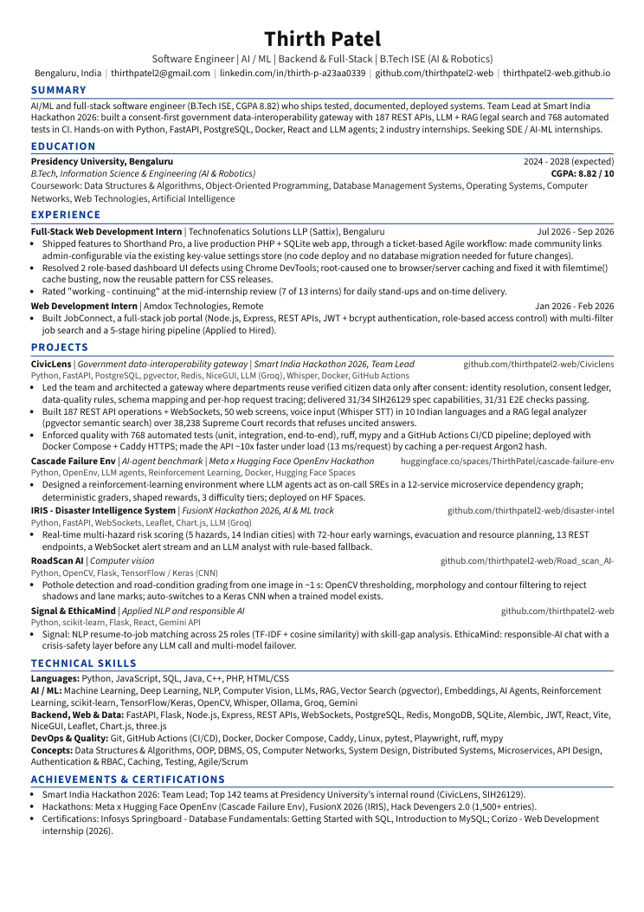

I'm a 3rd-year Information Science & Engineering student specialising in AI & Robotics at Presidency University, Bengaluru (CGPA 8.82), and I led my team at Smart India Hackathon 2026.
I like projects where AI meets messy reality: government systems that don't talk to each other, roads full of potholes, résumés that need honest feedback, and chatbots that must know when to hand over to a human.
My stack is mostly Python (FastAPI, Flask, scikit-learn, OpenCV) and JavaScript (React, Node), with LLMs, RAG and agents where they actually help. Two industry internships taught me the other half: reading someone else's production code and changing it safely.
const thirth = { studies: "ISE — AI & Robotics", at: "Presidency University", based: "Bengaluru, India", builds: ["LLM + RAG", "computer vision", "full-stack apps", "AI agents"], rule: "ship it, test it, be honest about it", }; // currently → building, learning, shipping
Government departments re-verify the same certificates again and again because their systems can't talk. CivicLens resolves identity, checks consent, fetches the verified record, validates it, transforms it and traces every hop — plus a citizen app for complaints, RTI, legal help and voice.

Every number on it links back to code you can open: tests, APIs, benchmarks, live demos.